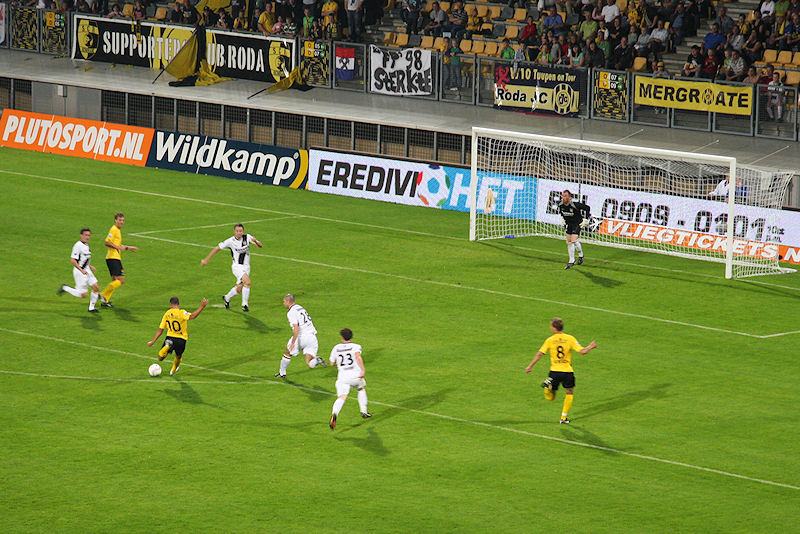

Net als vorig heeft NAC de kidsclub mee.
Supportersvereniging FP '98 brengt een laatste groet aan de overleden André
Mommertz en Guido.
Alleen Kah kijkt de goede kant uit...
NAC speelt als een natte dweil. Roda dicteert de wedstrijd, is voortdurend
in balbezit en krijgt binnen tien minuten een half dozijn corners,
zoals na deze actie waar NAC-doelman Ten Rouwelaar de bal uit een door
Hadouir genomen vrije trap over het doel tikt.

Ondanks het overwicht van Roda is de eerste helft tamelijk gezapig met af en
toe een moment van opwinding zoals hier waar Hadouir een
schot lost op het Brabo-doel.
Omdat niemand bij Roda een fatsoenlijke hoekschop kan nemen levert ook
corner 256 niks op.
Alle spelers van NAC op de eigen helft !!!
De Fauw (buiten beeld) bedient Junker die beheerst binnen kopt: 1-0, (54').
Even later kopt NAC-verdediger Loran de bal knullig voor de voeten van
Junker die met een poeier 2-0 scoort, (57').
De tamelijk onbekende scheidsrechter Van Meenen trok geel voor Hadouir,
Penders, Gilissen, Leonardo, Kah, Gorter.
NAC gaat opeens ook voetballen en creëert zodoende enkele kansen.
Dit is de voet van Leo Ehlen, althans dat zou de
drager van
deze vacuum-scapino wensen. In elk geval bewijst hij eega Tanja bij deze
netjes geschoeid in Z16 te participeren.
Ondertussen blijft NAC amechtig aanvallen. Koren op de molen voor Roda dat
bij Bredaas balverlies razendsnel en gedreven countert. Het
blijft bij 2-0, een welkome driepunter!
Kah dirigeert de "Humba".
Het bier ging vanavond tijdens de rust compleet op! Ook het supportershome
stond na enige tijd "droog".
Derhalve een iets uitgedunde selectie feestvierders in de Kickoff.
Kjell Knops en Arnoud Sutchuin-Djoum (flashy sjliepsjen trouwens).
Davy de Fauw met dochtertje van iemand anders.
Too late boy!

Junker heeft er twee fans bij !